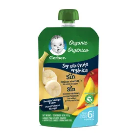
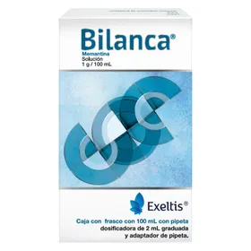
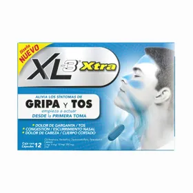
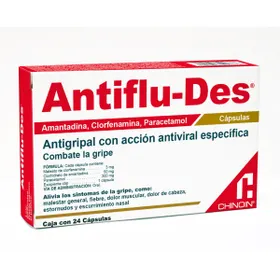
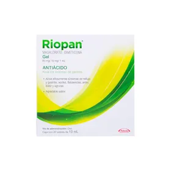
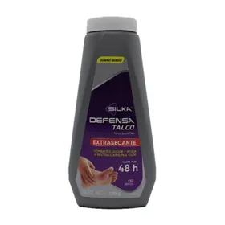
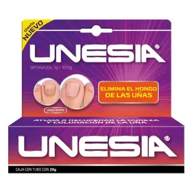

Caduet:

$179 - 40% de descuento
Caduet es un medicamento que contiene dos principios activos, amlodipino (antagonista del calcio) y atorvastatina (estatina), utilizado para prevenir eventos cardiovasculares en pacientes con tensión arterial alta y factores de riesgo para enfermedades cardiovasculares, como tabaquismo, sobrepeso, altos niveles de colesterol en sangre, antecedentes familiares de enfermedades cardiacas o diabetes. Su combinación permite un abordaje integral para la prevención de eventos cardiovasculares mayores. Amlodipino actúa dilatando los vasos sanguíneos para reducir la presión arterial, mientras que atorvastatina regula los niveles de colesterol malo (LDL) en sangre. Es indicado especialmente en pacientes con comorbilidades que requieren un control dual, lo cual simplifica la adherencia al tratamiento y mejora los resultados a largo plazo.
Tempra:

$100 - 46% de descuento
Medicamento genérico ampliamente utilizado para tratar afecciones respiratorias leves y moderadas, especialmente durante épocas de alta incidencia de gripe y resfriados. Su fórmula actúa como un descongestionante nasal, antipirético y analgésico, ayudando a aliviar síntomas como fiebre, dolor de cabeza, congestión, lagrimeo e irritación en garganta. Ideal para adultos y adolescentes, es un aliado eficaz en el tratamiento de infecciones respiratorias comunes. Se recomienda su uso bajo indicación médica para evitar automedicación innecesaria.
Silkamedic:

$256 - 38% de descuento
Producto terapéutico utilizado como auxiliar en el tratamiento de infecciones virales de vías respiratorias superiores. Formulado para aliviar los síntomas más comunes de la gripe estacional, tales como secreción nasal, dolor muscular y escalofríos. Ofrece una acción rápida, segura y eficaz. Su uso continuo durante los primeros días de los síntomas puede acortar el curso de la enfermedad. Es compatible con otros tratamientos sintomáticos, pero siempre debe consultarse con un profesional de salud si los síntomas persisten.
Productos y Precios:
Gerber:
$50-10% de descuento
Alimento infantil que proporciona los nutrientes esenciales para bebés durante las primeras etapas del crecimiento. Elaborado con frutas, verduras y cereales naturales, Gerber es ideal para la alimentación complementaria. Cada presentación está pensada para las diferentes etapas de desarrollo, garantizando la correcta digestión y absorción de vitaminas y minerales. Es un producto confiable, libre de conservadores, que fortalece los hábitos alimenticios saludables desde la infancia.
Bilanca:
$50-12% de descuento
Suplemento nutricional diseñado para reforzar el sistema inmunológico, especialmente en temporadas de alta exposición a virus y bacterias. Contiene una combinación de vitaminas del complejo B, C, minerales y antioxidantes naturales que ayudan al organismo a responder mejor ante el estrés físico, mental o inmunológico. Bilanca también favorece la regeneración celular y mejora el estado de ánimo. Ideal para personas con baja energía o deficiencias nutricionales detectadas.
Acc:

$123-5% de descuento
Mucolítico con acetilcisteína que fluidifica las secreciones bronquiales, facilitando su eliminación y mejorando la función respiratoria. Recomendado en cuadros de bronquitis aguda o crónica, EPOC y otras enfermedades con exceso de moco. Su administración oral tiene efecto rápido, contribuyendo a disminuir la tos productiva. ACC también posee propiedades antioxidantes que protegen el tejido pulmonar durante los procesos inflamatorios. Puede usarse en adultos y niños bajo supervisión médica.
Xl3:
$450-15% de descuento
Medicamento de uso común para tratar los síntomas asociados al resfriado común y la gripe, como fiebre, tos, dolor de garganta y secreción nasal. XL3 combina paracetamol, clorfenamina y fenilefrina para ofrecer un alivio integral durante el día o la noche, según la formulación. Su uso está indicado en adultos y adolescentes mayores de 12 años. Se recomienda no combinar con otros productos que contengan los mismos principios activos para evitar sobredosificación.
Antiflu-des:
$650-15% de descuento
Solución en polvo para preparar bebida caliente, indicada para el tratamiento sintomático de estados gripales y resfriado común. Contiene una mezcla de paracetamol, fenilefrina y clorfenamina que actúan rápidamente al ser ingeridos con agua caliente. Su efecto descongestionante y analgésico ayuda a mejorar el descanso nocturno y reducir la fiebre. Es útil en pacientes que prefieren medicamentos en forma líquida. No debe combinarse con otros antihistamínicos.
Riopan:
$389-5% de descuento
Antiácido de acción rápida que alivia la acidez estomacal, la indigestión y la sensación de ardor causada por el reflujo gástrico. Riopan contiene magaldrato, un compuesto que neutraliza el exceso de ácido en el estómago sin generar efecto rebote. Puede utilizarse en cuadros de gastritis, úlceras gástricas y molestias postprandiales. Su uso es seguro a corto plazo, pero debe consultarse al médico si los síntomas son persistentes o frecuentes.
Silka Defensa:
$78-3% de descuento
Antifúngico tópico de amplio espectro que combate infecciones causadas por hongos en la piel, como el pie de atleta, tiña y dermatofitosis. Su aplicación regular elimina el hongo desde la raíz, aliviando rápidamente síntomas como picor, ardor, mal olor y enrojecimiento. Su fórmula penetra profundamente en las capas de la piel y previene la reaparición de la infección. Es ideal para deportistas o personas que frecuentan ambientes húmedos.
Unesia:
$123-8% de descuento
Su aplicación regular elimina el hongo desde la raíz, aliviando rápidamente síntomas como picor, ardor, mal olor y enrojecimiento. Su fórmula penetra profundamente en las capas de la piel y previene la reaparición de la infección. Es ideal para deportistas o personas que frecuentan ambientes húmedos. Unesia es una crema antimicótica especialmente formulada para tratar onicomicosis (hongos en las uñas). Su acción profunda combate el hongo desde la raíz. Aplicada de forma constante, ayuda a restaurar el color y textura de la uña afectada, eliminando el hongo de forma gradual y evitando que se propague a otras zonas. Su fórmula está diseñada para uso prolongado sin efectos secundarios graves, siendo una opción segura para pacientes con infecciones persistentes o recurrentes.